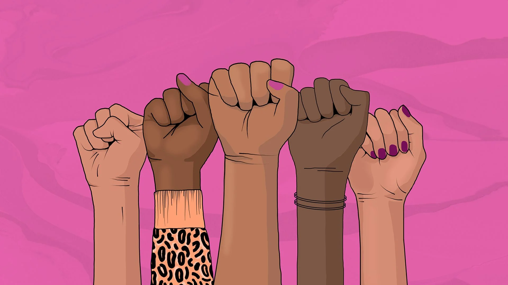
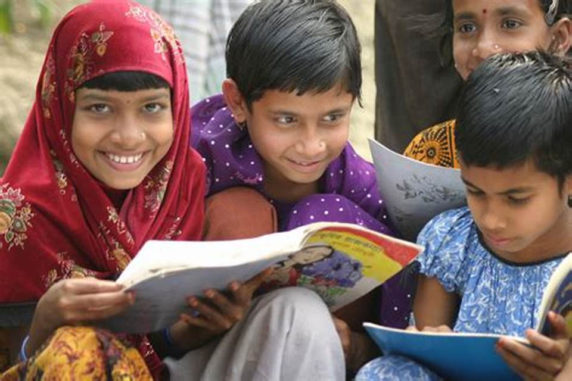
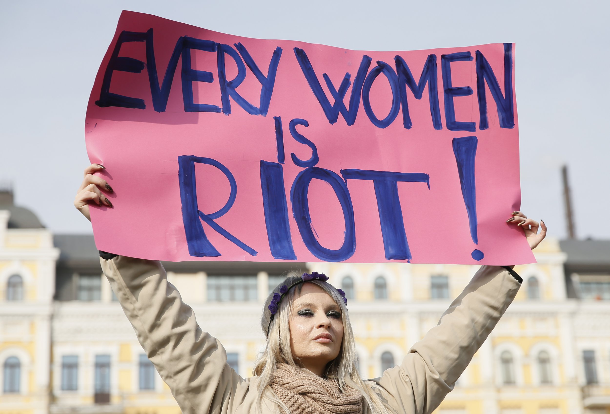
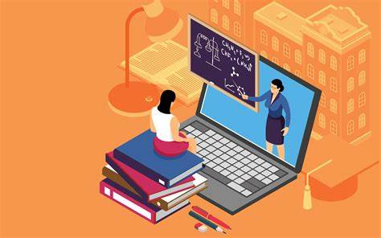
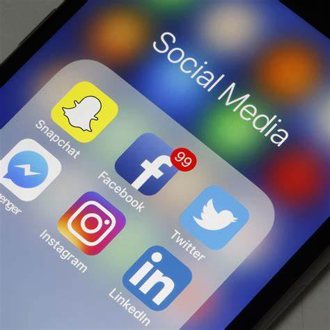

Breaking Down Barriers
Jan 12, 2019

Education is a fundamental right, yet millions of girls and women continue to face barriers that prevent them from accessing quality education. Social norms, cultural practices, poverty, early marriage, and lack of infrastructure are some of the obstacles that hinder women's education. We delve into these barriers, shedding light on their impact and discussing strategies to overcome them. Initiatives such as scholarships, girls' empowerment programs, and policy changes can make a significant difference in breaking down these barriers and ensuring equal educational opportunities for women.
Empowering Women
Dec 1, 2019
Education serves as a catalyst for women's empowerment, enabling them to lead independent, fulfilling lives. It equips them with knowledge, skills, and confidence to make informed decisions, pursue their dreams, and participate actively in society. By investing in women's education, we invest in their potential to become leaders, entrepreneurs, scientists, and agents of change. We explore inspiring stories of women who have shattered societal expectations through education and highlight the transformative power it has on their lives.
Economic Impact
Feb 9, 2020
The economic benefits of women's education are undeniable. Educated women are more likely to secure better job opportunities, earn higher incomes, and contribute to their families' well-being. Moreover, educated women invest a significant portion of their earnings back into their communities, leading to a multiplier effect that fuels economic growth. We examine case studies and research that demonstrate the positive correlation between women's education and economic development, emphasizing the importance of investing in women's education for a prosperous future.
Health and Well-being
Jul 7, 2021
Education also plays a critical role in improving women's health and well-being. Educated women are more likely to make informed decisions regarding their reproductive health, nutrition, and overall well-being. They are better equipped to understand and challenge harmful cultural practices, such as early marriage and gender-based violence. By promoting women's education, we pave the way for healthier and more resilient communities, breaking the cycle of poverty and inequality.
Advocacy and Policy Change
Oct 19, 2022
To achieve lasting change, advocacy and policy reforms are essential. We discuss the importance of advocating for women's education at all levels, from grassroots initiatives to global campaigns. By advocating for gender-responsive education policies, inclusive curriculum, and targeted investments, we can ensure that women's education remains a priority on the international development agenda. We also highlight successful examples of organizations, governments, and individuals working towards this cause and the impact of their efforts.
About Me

chandra lahari
Andhra Pradesh.
Popular Post
Online Education for better futureSocial Media Impact on Children
 The Secrets of Nature
The Secrets of Nature
Follow Me
chandralaharibatthala@gmail.com